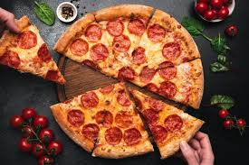

food-Recepts-Website
Pizza Peperonni

Click the button! to watch the full recept of Pizza Peperonni.
Burger
Click the button! to watch the full recept of Burger.
Khinkali
Click the button! to watch the full recept of Khinkali.
On our website. There are many secret recepts,
that are good for people and are very delicious.